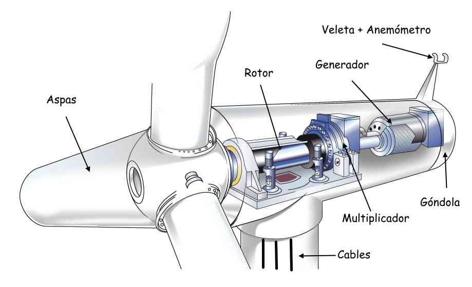

|
Un
aerogenerador es un generador eléctrico que funciona convirtiendo la
energía cinética del viento en energía mecánica, a través de una
hélice, y finalmente, en energía eléctrica gracias a un alternador
(generador de corriente eléctrica alterna).
Sus precedentes directos son los molinos de viento que se emplean para
la extracción de agua de pozos o para la molienda de grano. En este
caso, la energía eólica (en realidad la energía cinética del aire en
movimiento) proporciona energía mecánica a un rotor hélice que, a
través de un sistema de transmisión mecánico, hace girar un generador,
normalmente un alternador trifásico, que convierte la energía mecánica
rotacional en energía eléctrica.
Existen diferentes tipos de aerogeneradores, dependiendo de su
potencia, la disposición del eje de rotación, el tipo de generador, etc.
Los aerogeneradores pueden trabajar de manera aislada o agrupados en parques eólicos o plantas de generación eólica.
|
Ventajas de la enrgía eólica
|
-
Es un tipo de energía renovable ya que tiene su origen en procesos atmosféricos debidos a la energía que llega a la Tierra procedente del Sol.
-
Es una energía limpia
al no requerir una combustión, por lo que no produce emisiones
atmosféricas ni residuos contaminantes, evitando así un incremento del
efecto invernadero y el cambio climático.
-
Puede instalarse en espacios no aptos para otros fines, por ejemplo en zonas desérticas, próximas a la costa, en laderas áridas o muy empinadas para ser cultivables.
- Puede convivir con otros usos del suelo, por ejemplo prados para uso ganadero o cultivos bajos como trigo, maíz, patatas, remolacha, etc.
-
Es posible construir parques eólicos en el mar,
donde el viento es más fuerte, más constante y el impacto social es
menor, aunque aumentan los costos de instalación y mantenimiento.
|
|
Desventajas de la energía eólica
|
-
Debido a la variabilidad natural y la
impredecibilidad del viento, para que la energía eólica pueda ser usada
como única fuente de energía eléctrica es necesario almacenar la
energía que se produce cuando hay viento para poder luego utilizarla
cuando no lo hay, así como contar con otras fuentes de energía de respaldo.
-
Para distribuir la electricidad producida por
cada parque eólico (que suelen estar situados además en parajes
naturales apartados) es necesario construir líneas de alta tensión
que sean capaces de conducir el máximo de electricidad que sea capaz de
producir la instalación.
-
Además de la evidente necesidad de una
velocidad mínima en el viento para poder mover las aspas, existe
también una limitación superior: si la velocidad del viento sobrepasa las
especificaciones del aerogenerador, es obligatorio desconectarlo,
puesto que su estructura puede resultar dañada por los esfuerzos que
aparecen en el eje.
-
El impacto paisajístico, unido al
ruido, suponen un problema ambiental a considerar.
|
|